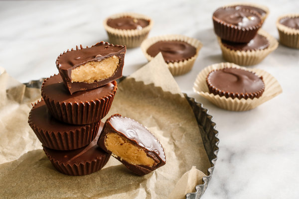

Raff's Peanut Butter Yums

Description
In this recipe we'll go over how to make some delectably delicious peanut cups from scratch! These sweet and salty morsels go best with semi-sweet chocolate, but you are more than welcome to use milk chocolate or dark chocolate to make it more to your taste.
We'll also go over two different ways of making them - the first being the classic way, pictured above, where the peanut filling is incased completely in chocolate, and the second way will be in a "sandwich" form, where you can see the peanut filling (pictured below).
Ingredients
- 2 cups milk, semi-sweet, or dark chocolate chips
- 2 tbsp shortening
- ½ cup butter (salted or unsalted)
- ½ cup creamy peanut butter
- 1 cup confectioners sugar
- ⅔ cup finely ground graham crackers
Steps
- In a 2-quart saucepan combine butter and peanut butter over medium heat until melted.
- Once melted, lower heat and stir in confectioners sugar and graham cracker crumbs. Take off heat once mixed in and set aside to cool.
- Set up cupcake tray with 2 cupcake liners in each (this adds stability when spreading chocolate).
- Make tempered chocolate by melting half the chocolate chips and halfshortening in microwave, stirring intermittently until smooth.
- Brush about 1 tsp of tempered chocolate into each cup liner, making sure to coat the sides. Set aside to cool and harden slightly.
- Peanut butter mix should now be a dough like consistency. Use a spoon to scoop small balls of peanut butter dough and flatten into silver dollar sized discs (slightly smaller than your cupcake liner diameter).
- Place the peanut butter discs into each chocolate filled cup.
- Melt second half of the chocolate and shortening, and spoon/spread it into each cup until the peanut butter discs are covered.
- Place trays into refrigerator and allow to cups to harden for about 2 hours - now take them out and enjoy your delicious and decadent peanut butter cups!